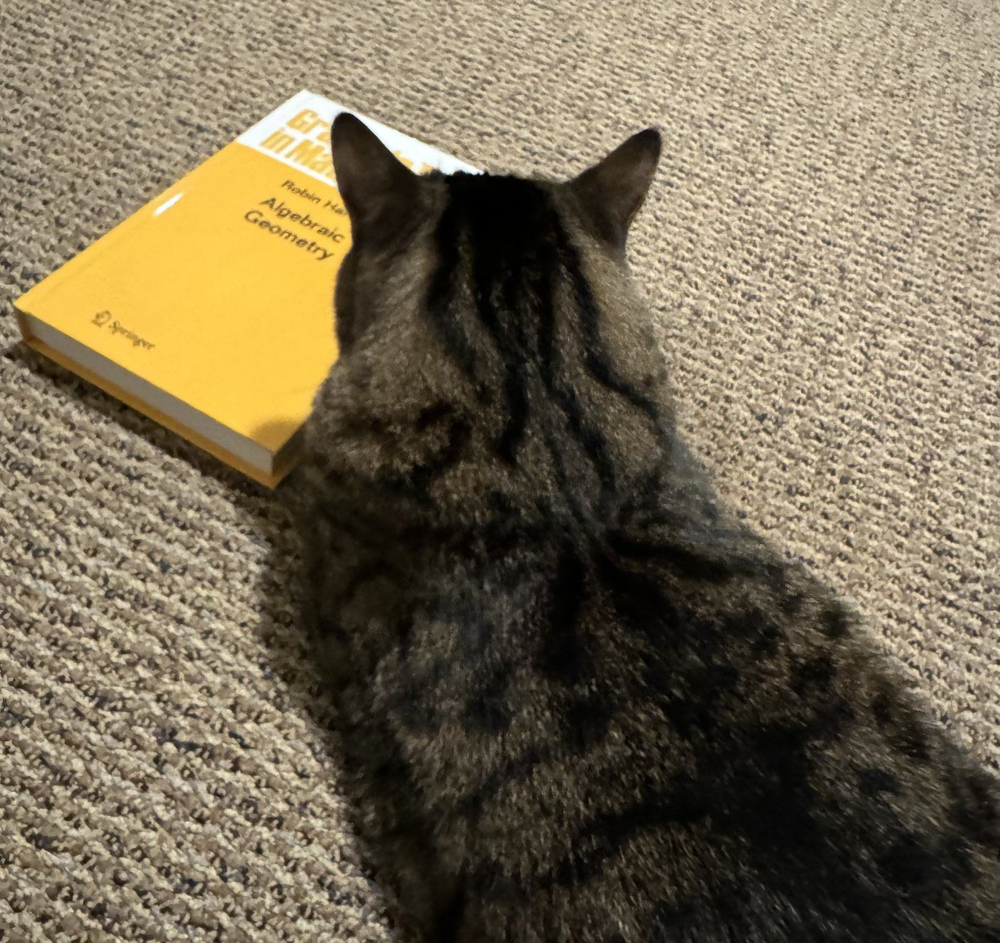

Beyond the papers
Outside work, I am mostly at home with my husband and our cat. The two of them know comparable amounts of mathematics; neither can define a variety yet, but both spend a considerable amount of time with my Springer books. My husband uses them to raise an iPad while he cooks; because the volumes come in different thicknesses, there is always one at precisely the right height. Our cat prefers rubbing his jaw against the sharp corners of the hard copies. So far, his favorite has been Hartshorne. Good taste.
While I was in the United States, I earned teaching certificates in yoga and Pilates after completing the required training hours and passing written and practical exams in anatomy and subject knowledge. Anyone who has gone far enough to earn a PhD may understand why a certificate awarded after a finite exam with a clearly defined scope feels strangely reassuring. I used to teach in Westwood and Santa Monica. These days, I mostly use the training to stretch myself and colleagues who have spent one hour too many in front of a screen.
I played a lot of badminton when I was younger. At an amateur level, I competed in tournaments at HKU, Stony Brook, and UCLA, mostly in mixed and women's doubles. In Dresden, I play with TSV Dresden.
I share my friend Bingbin Liu's values: protect your time, embrace the power of writing and clarity of thought, and, in general, be kind.

A critic of algebraic geometry with excellent reading habits.